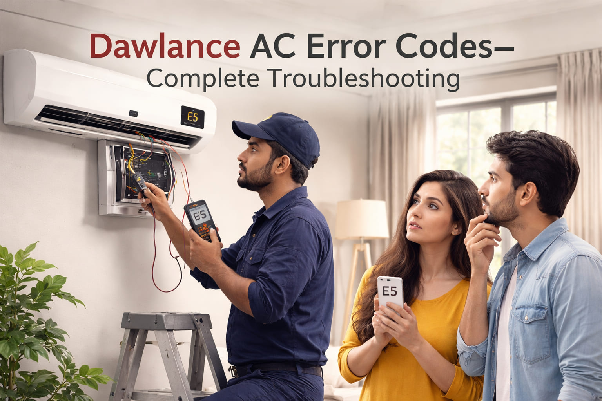

A man from Hyderabad called me in May 2021. He said "My Dawlance AC is showing E5 error. The outdoor unit is making a buzzing sound but the compressor is not starting. It is 48 degrees outside and my family is suffering." I told him to check the compressor capacitor. He found a 50 microfarad capacitor with a bulging top. He replaced it with a new capacitor from the local market. The compressor started working. The AC cooled again. He sent me a voice message saying "You saved my family from the heat. Thank you brother."
Error: E5 | Fix: Compressor capacitor replacement
Dawlance is one of Pakistan's most trusted home appliance brands. Dawlance ACs are designed specifically for Pakistani conditions including extreme heat, dust, and voltage fluctuations. This guide covers all Dawlance AC error codes with real troubleshooting solutions.
Quick Tip: Before calling a technician, reset your Dawlance AC. Turn off the unit and switch off the circuit breaker for 10 to 15 minutes. This clears temporary errors, especially after power fluctuations.
In July 2019, a family from Gujranwala contacted me. Their Dawlance AC was showing E2 error. The AC was running but not cooling properly. The indoor unit had ice on it. I asked them to check the air filters. They were completely black with dust. They cleaned the filters and turned off the AC for 3 hours to let the ice melt. After restarting, the AC worked perfectly. The father told me "I was about to call a technician who wanted 3000 rupees. You saved me money and time."
Error: E2 | Fix: Clean air filters and thaw ice
| Error Code | Meaning | Common Fix |
|---|---|---|
E1 | Indoor PCB / Fan motor | Check fan, wiring, capacitor |
E2 | Room temperature sensor / Freeze | Clean filters, check sensor |
E3 | Evaporator coil sensor | Replace sensor, check wiring |
E4 | Outdoor unit / Condenser sensor | Clean outdoor unit, check sensor |
E5 | Compressor error / Overload | Check capacitor, let cool |
E6 | Communication error | Reset power, check wiring |
E7 | Outdoor fan motor error | Check fan capacitor, motor |
E8 | EEPROM error | PCB replacement needed |
E9 | High pressure protection | Clean condenser coils |
A shopkeeper from Sukkur called me in June 2022. He said "My Dawlance AC is showing E6 error. The AC turns on but there is no cooling. The outdoor unit is not responding." I asked him about the wiring between indoor and outdoor units. He checked and found that rats had eaten the communication wire. He fixed the wire connection. The error went away. He said "I learned something new today. Now I will protect my wires with pipe."
Error: E6 | Fix: Repair damaged communication wire
Symptoms: Indoor fan not running, or AC not responding to remote.
Common causes: Loose wiring, fan motor seized, capacitor failure, PCB issue.
Solutions:
Symptoms: AC runs but does not cool, ice on indoor unit, water leakage.
Common causes: Dirty air filters, faulty sensor, loose wiring.
Solutions:
Symptoms: AC not cooling properly, error appears after running for some time.
Solutions:
Symptoms: AC runs but cooling is poor, outdoor unit very hot.
Solutions:
A young technician from Quetta messaged me in May 2025. He said "I have a customer with Dawlance AC showing E7 error. The outdoor fan is not spinning. I changed the fan capacitor but still no fan." I asked him to check the fan motor wiring. He found that a wire had burned near the motor connection. He repaired the wire. The fan started working. The customer was happy. The technician said "Thank you for teaching me. I will remember this."
Error: E7 | Fix: Repair burned fan motor wire
Symptoms: Outdoor unit humming but compressor not starting, AC not cooling.
Solutions:
Warning: Compressor repair requires professional knowledge. Do not attempt DIY.
Symptoms: AC turns on but no cooling, error appears after power fluctuation.
Solutions:
Symptoms: Outdoor fan not spinning, compressor runs but AC not cooling.
Solutions:
Symptoms: AC shows error immediately after power on, not responding to controls.
Solutions:
Professional Only: PCB replacement requires technical expertise.
Symptoms: AC stops suddenly, shows error, restarts after cooling down.
Solutions:
In August 2023, a housewife from Bahawalpur called me. She said "My Dawlance AC is showing E9 error. It runs for 10 minutes and then stops. The outdoor unit feels very hot." I told her to check if the outdoor fan was spinning. She said the fan was not spinning. I guided her to check for any obstruction. She found a plastic bag stuck in the fan. She removed it. The fan started working. The AC stopped showing the error. She was very happy. She said "You are doing great work helping people like us."
Error: E9 | Fix: Remove plastic bag blocking outdoor fan
Dawlance Pakistan Service: Customer service number is 0800-432752 (toll free). Website is www.dawlance.com.pk. For professional service, always use authorized Dawlance service centers.
Safety Warning: Always disconnect power before any inspection. For compressor, refrigerant, or PCB issues, always call certified technicians. Electrical components can be dangerous.